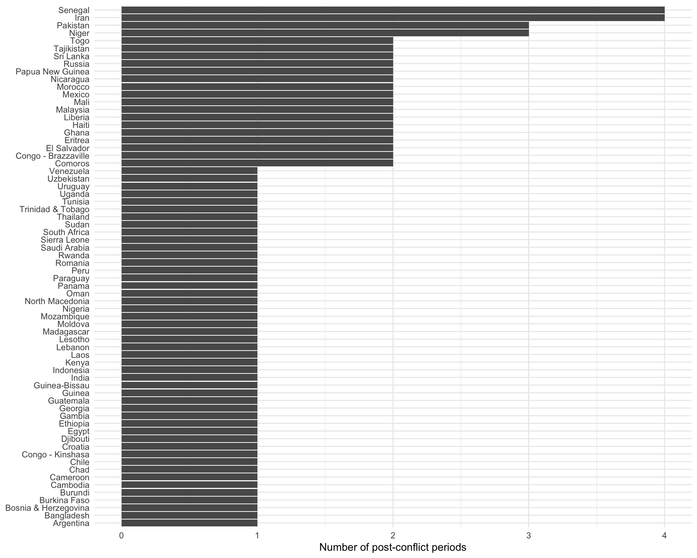
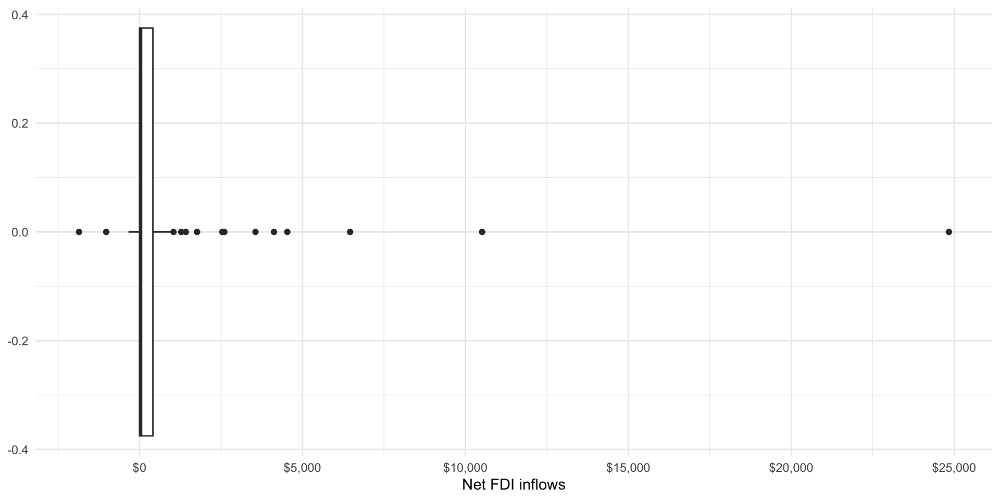
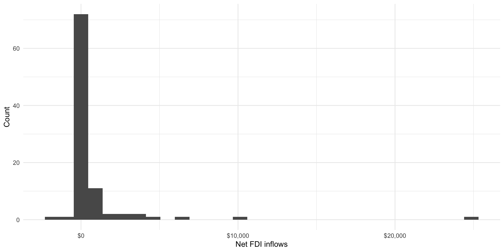
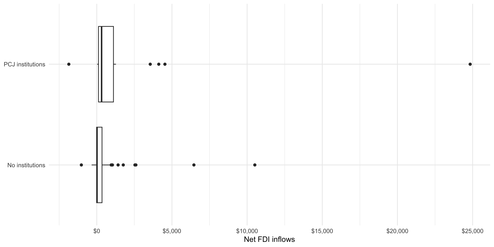
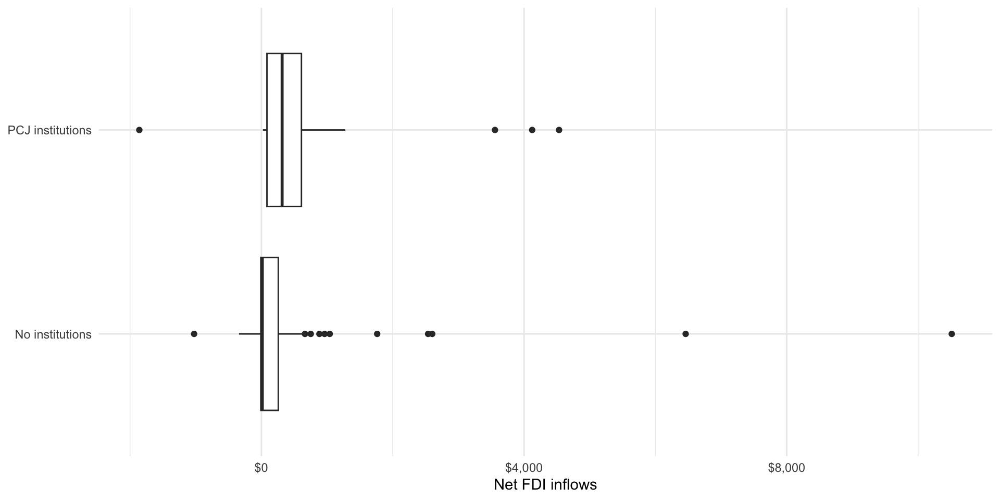

install.packages(c("broom", "ggridges", "modelsummary"))Applications & Review
Set up
Installing packages
If you have not already done so, please install or update these packages by running the following in your console:
library(tidyverse)
library(polisciols)
library(scales)
library(skimr)
library(janitor)
library(modelsummary)Appel and Loyle (2012) (two wonderful UMD GVPT alumni) wanted to know more about why some states that are emerging from conflict set up post-conflict justice (PCJ) institutions. These institutions include courts that prosecute crimes committed during conflict, truth and reconciliation commissions, and other accountability procedures. They argue that leaders of post-conflict states, desperate for injections of foreign capital into their beleaguered economies, will set these up - in part - to send a costly and credible signal to foreign investors that these new leaders are committed to political stability and successful reconstruction.
Today, we are going to use the tools you have learnt so far in this course to explore the empirics sitting behind their published research.
The data
We will use their data. You can access it through the ebj data set in the polisciols R package:
tibble(ebj)# A tibble: 95 × 19
id ccode country_name pcj net_fdi_inflows gdp_per_capita gdp
<dbl> <dbl> <chr> <fct> <dbl> <dbl> <dbl>
1 71 41 Haiti No inst… -9.80 1182. 8.41e 9
2 71 41 Haiti No inst… 6.60 1089. 8.06e 9
3 154 52 Trinidad & Tobago No inst… 510. 7743. 9.54e 9
4 102 70 Mexico No inst… -341. 6895. 6.28e11
5 102 70 Mexico No inst… 6461. 7780. 7.31e11
6 67 90 Guatemala PCJ ins… 431. 3062. 3.13e10
7 141 92 El Salvador No inst… -7 2093. 9.76e 9
8 141 92 El Salvador PCJ ins… 264. 3045. 1.67e10
9 116 93 Nicaragua No inst… 2.70 1302. 4.24e 9
10 116 93 Nicaragua PCJ ins… 337. 1350. 5.59e 9
# ℹ 85 more rows
# ℹ 12 more variables: gdp_per_capita_growth <dbl>, ex_rate_fluc <dbl>,
# cap_account_openness <dbl>, labor <dbl>, f_life_exp <dbl>, polity2 <dbl>,
# pol_constraints <dbl>, conflict_duration <dbl>, damage <dbl>,
# peace_agreement <fct>, victory <fct>, cold_war <fct>Their unit of observation is post-conflict country 10-year period. They have collected data on 95 of these periods. They include all post-conflict periods for developing countries that concluded an internal armed conflict with at least 25 battle-related deaths in the period between 1970 and 2001.
Many countries, including Haiti and Mexico, have multiple conflicts between 1970 and 2001 from which they emerged. We can calculate the number of post-conflict periods included for each country using the following code:
ebj |>
count(country_name) |>
head() country_name n
1 Argentina 1
2 Bangladesh 1
3 Bosnia & Herzegovina 1
4 Burkina Faso 1
5 Burundi 1
6 Cambodia 1This makes for an unwieldy table. Let’s visualize these data to get a better sense of our observations:
ebj |>
count(country_name) |>
ggplot(aes(x = n, y = reorder(country_name, n))) +
geom_col() +
theme_minimal() +
labs(x = "Number of post-conflict periods",
y = NULL)
Senegal and Iran fall back into conflict the most across this time period. Most commonly; however, countries only experience one post-conflict period during this time.
Dependent variable
From their theory, Appel and Loyle (2012) pose the following hypothesis:
FDI is likely to be greater in a post-conflict state where there is a PCJ compared with a post-conflict state that lacks a similar justice institution.
Note
FDI stands for foreign direct investment. It measures the total value of ownership stakes held by foreign companies or individuals.
They are, therefore, interested in exploring changes to FDI in post-conflict states with PCJ institutions compared to that in post-conflict states without them. Specifically, they measure net FDI inflows (measured as the total FDI inflows minus total FDI outflows of capital) over the 10-year period following the end of the conflict.
Among post-conflict states, what is the spread of net FDI inflows? Let’s start by calculating the five-number summary:
ebj |>
skim(net_fdi_inflows)| Name | ebj |
| Number of rows | 95 |
| Number of columns | 19 |
| _______________________ | |
| Column type frequency: | |
| numeric | 1 |
| ________________________ | |
| Group variables | None |
Variable type: numeric
| skim_variable | n_missing | complete_rate | mean | sd | p0 | p25 | p50 | p75 | p100 | hist |
|---|---|---|---|---|---|---|---|---|---|---|
| net_fdi_inflows | 0 | 1 | 759.15 | 2910.95 | -1858.91 | -0.57 | 38.29 | 408.25 | 24836.79 | ▇▁▁▁▁ |
On average, post-conflict states appear to receive $759.15 million more in FDI inflows than their domestic investors invest overseas. However, the differences between the states in our data appear to be huge! One poor country (Indonesia) lost $1,858.91 million in investment compared to what it received. Russia, on the other hand, racked in $24,836.79 million in net investment.
We can get a better sense of this spread by visualizing our data:
ggplot(ebj, aes(x = net_fdi_inflows)) +
geom_boxplot() +
theme_minimal() +
labs(x = "Net FDI inflows") +
scale_x_continuous(labels = dollar)
ggplot(ebj, aes(x = net_fdi_inflows)) +
geom_histogram() +
theme_minimal() +
labs(x = "Net FDI inflows",
y = "Count") +
scale_x_continuous(labels = dollar)
There’s a lot of variance! Some countries appear to receive an extremely large increase in net FDI flows in the 10 years following the end of conflict. However, most appear to be hovering around no substantial increase at all.
Independent variable
The authors argue that we should expect to see a lot of variance. Countries that do not establish PCJ institutions and, therefore, do not signal to investors their commitment to political stability should expect to receive fewer inflows of FDI than their more reconciliatory peers.
How many post-conflict periods involved at least one PCJ institution? We can quickly answer this using a frequency table:
tabyl(ebj, pcj) pcj n percent
No institutions 77 0.8105263
PCJ institutions 18 0.1894737The majority of post-conflict periods did not include a PCJ institution.
The relationship between FDI and PCJ institutions
Did the periods that included PCJ institutions tend to receive higher net FDI inflows than their less reconciliatory counterparts?
ebj |>
group_by(pcj) |>
summarise(avg_net_fdi = dollar(mean(net_fdi_inflows)))# A tibble: 2 × 2
pcj avg_net_fdi
<fct> <chr>
1 No institutions $425.01
2 PCJ institutions $2,188.52 Yes! States that established a PCJ institution received higher net FDI inflows, on average, compared to those that did not. This difference looks large!
ebj |>
group_by(pcj) |>
summarise(avg_net_fdi = mean(net_fdi_inflows)) |>
ungroup() |>
mutate(difference = avg_net_fdi - lag(avg_net_fdi),
across(avg_net_fdi:difference, ~ dollar(.x)))# A tibble: 2 × 3
pcj avg_net_fdi difference
<fct> <chr> <chr>
1 No institutions $425.01 <NA>
2 PCJ institutions $2,188.52 $1,763.52 Let’s look at all of our data within this context:
ggplot(ebj, aes(x = net_fdi_inflows, y = pcj)) +
geom_boxplot() +
theme_minimal() +
labs(x = "Net FDI inflows",
y = NULL) +
scale_x_continuous(labels = dollar)
We can see differences between our groups, but I wonder if these differences are being driven by those outliers. Specifically, I am interested in seeing whether this relationship holds if I exclude Russia from the analysis:
ebj_no_russia <- filter(ebj, country_name != "Russia")
ebj_no_russia |>
group_by(pcj) |>
summarise(avg_net_fdi = mean(net_fdi_inflows)) |>
ungroup() |>
mutate(difference = avg_net_fdi - lag(avg_net_fdi),
across(avg_net_fdi:difference, ~ dollar(.x)))# A tibble: 2 × 3
pcj avg_net_fdi difference
<fct> <chr> <chr>
1 No institutions $411.94 <NA>
2 PCJ institutions $856.27 $444.33 The difference is still substantial (remember, those are millions of dollars). Post-conflict periods that included PCJ institutions received, on average, almost double the net FDI inflows compared to those that did not include these institutions. However, the size of this difference is much smaller.
ggplot(ebj_no_russia, aes(x = net_fdi_inflows, y = pcj)) +
geom_boxplot() +
theme_minimal() +
labs(x = "Net FDI inflows",
y = NULL) +
scale_x_continuous(labels = dollar)
Other important factors
Let’s take a look now at some other factors that may be increasing the chances that a post-conflict period includes a PCJ institution and that foreign investors may be willing to venture into these vulnerable states.
One potentially confounding factor Appel and Loyle (2012) account for is whether the conflict ended with a peace agreement. It is plausible that peace agreements are stuck on the condition of PCJ institutions being established. It is also plausible that foreign investors will view peace as more durable when it is decisively won.
Let’s first look at whether conflicts that ended in a peace agreement are more likely to include a PCJ institution in the post-conflict period.
datasummary_crosstab(pcj ~ peace_agreement, data = ebj,
statistic = 1 ~ 1 + N + Percent("col"))| pcj | No agreement | Peace agreement | All | |
|---|---|---|---|---|
| No institutions | N | 70 | 7 | 77 |
| % col | 89.7 | 41.2 | 81.1 | |
| PCJ institutions | N | 8 | 10 | 18 |
| % col | 10.3 | 58.8 | 18.9 | |
| All | N | 78 | 17 | 95 |
| % col | 100.0 | 100.0 | 100.0 |
Although we are working with a very small number of cases (only 17 post-conflict periods involved a peace agreement), we can see some support for our intuition. The majority of conflicts that ended with a peace agreement included a PCJ in the post-conflict period (58.8%). On the other hand, the vast majority of conflicts that ended without agreement included no institutions in the post-conflict period (89.7%).
Now, let’s ask whether peace agreements are also associated with lower levels of net FDI inflows.
ebj |>
group_by(peace_agreement) |>
summarise(avg_net_fdi = mean(net_fdi_inflows)) |>
ungroup() |>
mutate(difference = avg_net_fdi - lag(avg_net_fdi),
across(avg_net_fdi:difference, ~ dollar(.x)))# A tibble: 2 × 3
peace_agreement avg_net_fdi difference
<fct> <chr> <chr>
1 No agreement $869.95 <NA>
2 Peace agreement $250.74 -$619.21 This difference looks large. It appears that foreign investors have more confidence in peace won decisively by one side than in those that end in a mediated agreement.
Now that we suspect that peace agreements may also have a substantial effect on net FDI inflows post-conflict states tend to receive, we should account for them. To do this, we want to compare like-for-like.
First, I want to look at all post-conflict periods that involved no peace agreements. I then ask whether net FDI inflows different substantially between periods that included PCJ institutions and those that did not. I find that they are! Among states emerging from conflict without a peace agreement, those that established at least one PCJ institution received, on average, $3,989 million more in net FDI inflows compared to those that did not establish one. That’s a lot of money!
Repeating this process among post-conflict periods that did not involve a peace agreement, I again find support for Appel and Loyle’s hypothesis. States that established PCJ institutions during this time tended to receive $311.93 million more in net FDI inflows than those that did not.
ebj |>
group_by(pcj, peace_agreement) |>
summarise(avg_net_fdi = mean(net_fdi_inflows)) |>
group_by(peace_agreement) |>
mutate(difference = avg_net_fdi - lag(avg_net_fdi),
across(avg_net_fdi:difference, ~ dollar(.x))) |>
arrange(peace_agreement)# A tibble: 4 × 4
# Groups: peace_agreement [2]
pcj peace_agreement avg_net_fdi difference
<fct> <fct> <chr> <chr>
1 No institutions No agreement $460.78 <NA>
2 PCJ institutions No agreement $4,450.20 $3,989.41
3 No institutions Peace agreement $67.25 <NA>
4 PCJ institutions Peace agreement $379.18 $311.93 So, even when we account for this potential confounding factor, we find support for Appel and Loyle’s hypothesis.
References
Appel, Benjamin J, and Cyanne E Loyle. 2012. “The Economic Benefits of Justice: Post-Conflict Justice and Foreign Direct Investment.” Journal of Peace Research 49 (5): 685–99. https://doi.org/10.1177/0022343312450044.